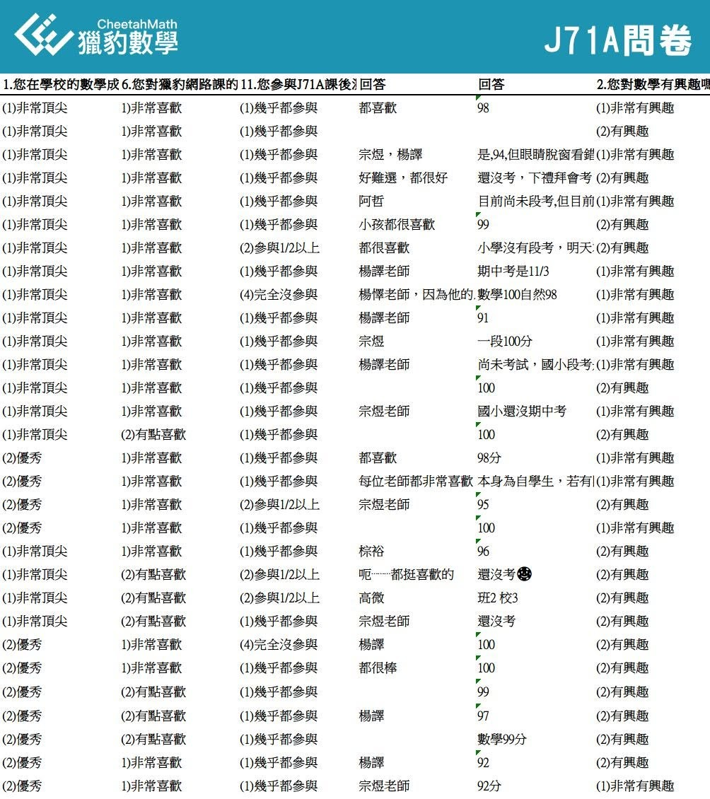
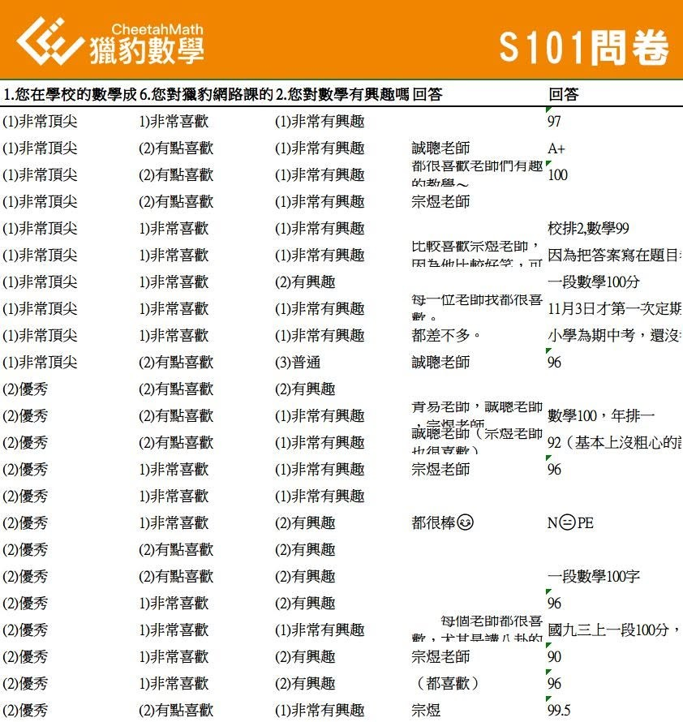

學得更深更廣，對學校課程的助益甚大！—
獵豹數學課學員反饋
隨著網路技術 設備環境的成熟，資源的日益豐沛，學生數位技能的精進，越來越多的學生加入了網路課程學習（在菁英階層尤其明顯）。
最近政府還編列了幾百億的預算，希望未來幾年 讓學童人手一個平板，便捷的使用數位學習。
我常接獲一些家長的詢問，他們聽聞（或從fb的文章影片）獵豹開設的數學課程難度 深度比一般傳統補習班高不少，似乎是針對競賽而不是針對學校的考試難度設計的，學生會不會反而無法照顧到學校的成績？
這實在是很大的誤解！
獵豹的J,S系列課程是從學校的基礎課程出發，涵蓋學校所有數學知識體系，但更延伸到深入的專題與世界各國的精彩好題！
認真參與課程，完成老師交付功課小考的孩子們，在學校的表現也都是相當優異的！
獵豹的學子 在許多競賽或入學考試上有輝煌成績，學校的小考、段考更是不在話下！（學校成績優秀者，獵豹學子族繁不及備載）
我們這次對J(國中系列）、S(高中系列）的上課同學做學習問卷調查（見下圖），其中有一道自評題：自評在校數學成績
從有效回收問卷統計，其中回答：非常頂尖或優秀者，且學校月考優異者，高達75%以上！就像J71A班群中一位認真孩子的媽媽說，「經過老師們高強度訓練，學校的考試不太需要(另外解說)」
獵豹的資優數學，並不是只有適合要考競賽的孩子，只要想要提升自己的數理邏輯能力，並且想要讓這樣的能力能協助各科的學習，進而在學校和升學考試中有好的表現，都非常適合！

獵豹網課中聚集了全國各地優秀又努力的學子們，互相激勵，見賢思齊，line班群中所有授課老師/宗翰老師/班主任在內，孩子和老師們時常激盪的數學發問和討論，更是進步的動力！
有效問卷其中三道問題，學員的回饋統計：
J71A問卷
在校數學成績非常頂尖/優秀：77%
喜歡獵豹網課：77%
對數學有興趣：94%
S101問卷
在校數學成績非常頂尖/優秀：78%
喜歡獵豹網課：70%
對數學有興趣：89%
詳細圖文請點擊以下臉書連結：
https://www.facebook.com/groups/695697124716309/permalink/935877760698243/

